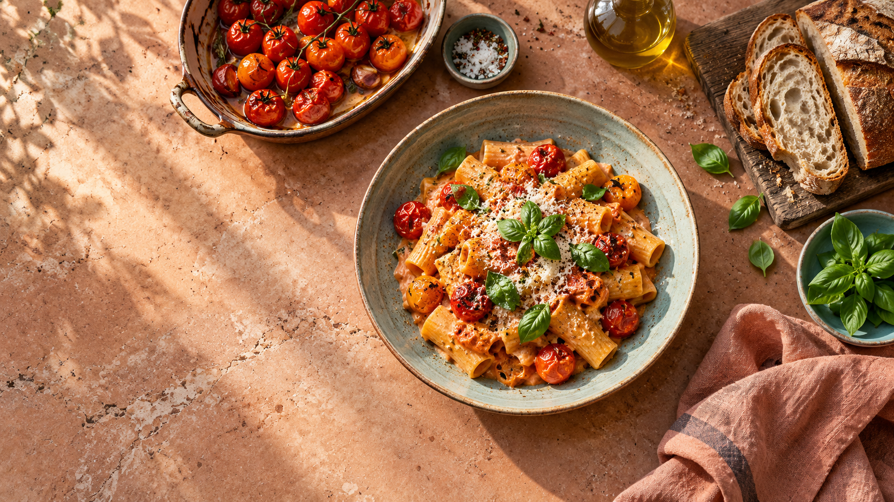

Kamra-egyezés
Pontosan látod, melyik alapanyag van meg, és melyikhez kell még bevásárolni.

A második séf a konyhádban
Mondd el, mi van otthon. Mi megmutatjuk, mi lehet belőle — az ízlésedhez, idődhöz és céljaidhoz igazítva.
Hanem hogy mi készülhet abból, ami már nálad van.
A Second Chef összehangolja a kamrádat, az idődet, a preferenciáidat és a tápanyagcéljaidat — majd érthetően megmutatja a legjobb következő fogást.
Add hozzá kézzel az alapanyagokat. Mennyiséggel vagy anélkül — a bizonytalanságot mindig jelezzük.
Allergia, étrend, nem kedvelt hozzávalók és időkeret. A kötelező szűrők mindig megelőzik a rangsorolást.
Látod, mi van meg, mi hiányzik és miért ezt ajánljuk. A hiányzó tételek egy mozdulattal a listára kerülnek.
Pontosan látod, melyik alapanyag van meg, és melyikhez kell még bevásárolni.
A személyes étkezésenkénti makrócélokhoz illesztve — adagonként, nem az egész fazékra.
A teljes elkészítési idő számít. A hiányzó adat nem válik automatikusan pozitív találattá.
Személyre szabva
6 recept illik a kamrádhoz és a beállításaidhoz.
Ami már megvan
0 alapanyag, csoportosítva.
Elmentve későbbre
A szívecskével mentett receptjeid egy helyen.
Ami még hiányzik
A receptekből és kézzel hozzáadott tételekből.
Személyes beállítások
Ezek alapján személyre szabjuk a találatokat.
A megadott allergénadatok szerint. Keresztszennyeződésre nem adható garancia.